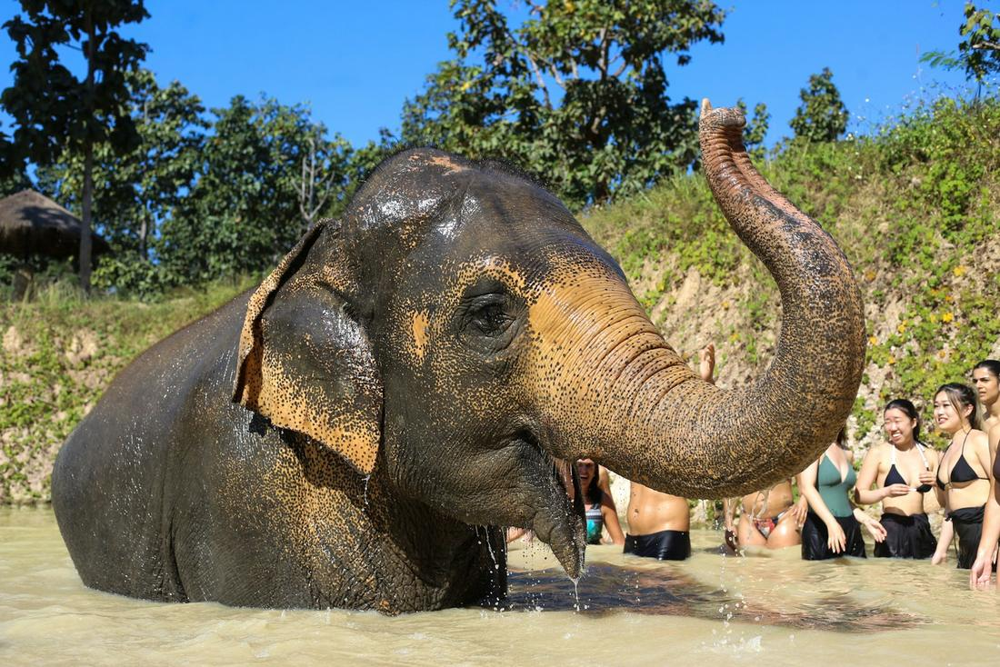
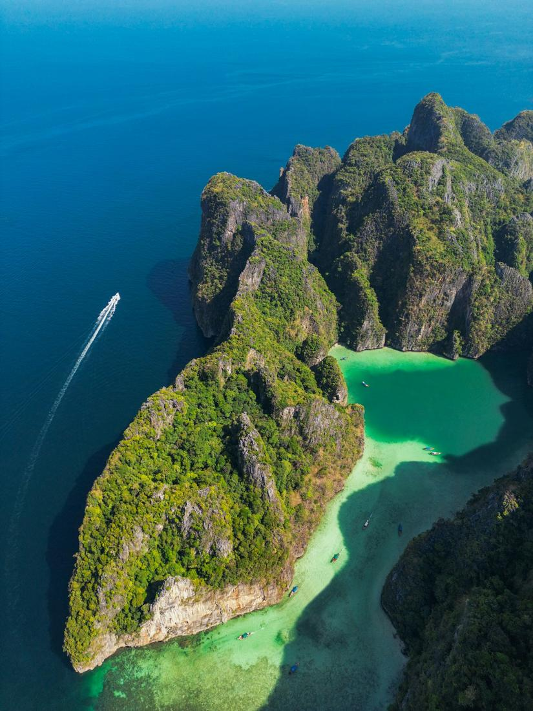

Golden temples, ethical elephant encounters, and turquoise islands, Thailand delivers at every turn.
Thailand is one of my favorite countries to send clients who've never been to Southeast Asia, because it gives you an incredible amount of range without feeling overwhelming. In one trip, you can wander gilded Buddhist temples in Bangkok, spend a morning bathing rescued elephants in the hills outside Chiang Mai, and end your trip cliff-jumping into the impossibly turquoise water off Phi Phi Island. The food alone is worth the flight, and the value is hard to beat - five-star hotels and incredible meals here cost a fraction of what you'd pay in Europe.
What makes Thailand so easy to fall in love with is how welcoming it is, for solo travelers, honeymooners, and families alike. Bangkok is chaotic in the best way, all tuk-tuks and temple spires and street food stalls, while Chiang Mai slows things down with mountains, night markets, and genuinely ethical wildlife experiences. And then there's the coast, where Phuket, Krabi, and the islands offer some of the most photographed beaches on the planet for good reason. As your travel advisor, I build itineraries that hit all three moods without wasting a single day on logistics.
Here are three excursions I love arranging for clients heading to Thailand.

This is the package I build for clients landing in Bangkok who want to hit the city's essential sights without feeling like they're racing a tour bus schedule. We start at the Grand Palace, the dazzling former royal residence with its golden spires and intricately tiled roofs, home to the revered Emerald Buddha at Wat Phra Kaew. From there, it's a short trip to Wat Pho, where a 150-foot reclining Buddha covered in gold leaf fills an entire temple hall, and Wat Arun, the Temple of Dawn, whose porcelain-encrusted spire looks best from a boat on the Chao Phraya River at sunset, which is exactly how we'll see it during an evening river cruise. On another morning, we head out of the city before sunrise to Damnoen Saduak floating market, where vendors in wooden longtail boats sell fresh fruit, noodle soup, and souvenirs along narrow canals, a genuinely photogenic slice of old Thailand that's disappearing elsewhere. This package is built for clients who want Bangkok's greatest hits - its palaces, temples, river, and markets - woven into two or three unhurried days instead of a single exhausting sprint.

This is the package for clients who want to slow down, head into the mountains, and have an animal encounter that actually feels good to be part of. We base you in Chiang Mai, northern Thailand's cultural capital, and spend a full day at an ethical, no-riding elephant sanctuary, where you'll feed, walk alongside, and bathe rescued elephants in a river, guided by mahouts who've devoted their lives to these animals' care. We follow that with a visit to Wat Phra That Doi Suthep, a golden temple perched on a mountainside above the city, reached by a dramatic staircase flanked by naga serpents, with sweeping views over the Chiang Mai valley. Inside the Old City walls, we wander between centuries-old temples like Wat Chedi Luang and Wat Phra Singh, then close out the evenings at Chiang Mai's famous night bazaar, browsing handmade textiles, silver jewelry, and northern Thai street food. For clients with an extra day, I love adding Doi Inthanon, Thailand's highest peak, where you can hike past waterfalls and through cloud forest to twin royal pagodas with panoramic mountain views. This is the slower, greener half of a Thailand trip, and it's the one people talk about most when they get home.

This is the package for clients who close their eyes and picture limestone cliffs rising straight out of turquoise water, because that image is real, and it's the Andaman coast of Thailand. Based out of Phuket or Krabi, we spend days hopping between islands by traditional longtail boat, the same wooden boats that have carried travelers through these waters for generations. A highlight is the Phi Phi Islands, including Maya Bay, the cove made famous by the film 'The Beach,' now carefully managed to protect its coral, where the water shifts through impossible shades of green and blue. We also build in a stop at James Bond Island in Phang Nga Bay, where a striking limestone spire rises out of the sea beside towering karst formations, best explored by longtail or kayak through hidden lagoons. For climbers and beach lovers, Railay Beach is a must, a peninsula accessible only by boat, ringed by dramatic cliffs that draw rock climbers from around the world, with soft white sand for everyone else. Snorkeling stops along the way reveal coral reefs, clownfish, and if you're lucky, reef sharks in the shallows. This is the beach finale I recommend to almost every Thailand client, because nothing quite prepares you for how blue that water really is.
Prefer to plan together? I'll build your custom package. Already know what you want? Book instantly through my travel portal.